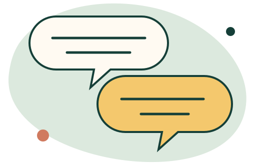

Solicitare de colaborare
Orice colaborare începe cu o conversație.
Trimiteți câteva informații de bază despre grupă și tema de interes. Acestea vor ajuta la pregătirea unei prime discuții clare.

Înainte de mesaj
Detaliile utile pentru început
Nu este nevoie să aveți deja programul definit. Este suficient să descrieți contextul și ce ați dori să susțineți la nivelul grupei.
- Instituția și localitateaGrădiniță, școală sau centru after-school din Brăila ori împrejurimi.
- GrupaVârsta copiilor și numărul aproximativ de participanți.
- ObiectivulTema sau situația generală care a determinat solicitarea.
- PerioadaIntervalul în care ați dori să fie organizate activitățile.
Aria de colaborare
Brăila și împrejurimi
Programele sunt concepute pentru a se desfășura la sediul instituției. Disponibilitatea concretă și condițiile de deplasare se stabilesc în discuția inițială.